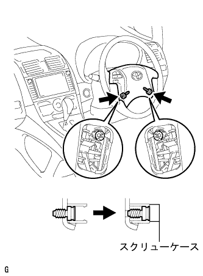
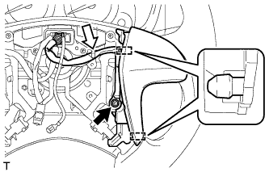

Steering Pad Switch Assembly (4-spoke Steering Wheel) Removal |
)| 1. Disconnect Battery Negative Terminal |
)| 2. Remove Steering Wheel Cover Lower NO.3 |
| 3. Remove Steering Wheel Cover Lower NO.2 |
| 4. Remove Horn Button Assembly |
 |
Using a torx socket wrench (T30), loosen the 2 torx bolts until they turn freely.
Using needle-nose pliers, pull out the 2 torx bolts.
 |
Pull the horn button assembly toward the rear of the vehicle.
 |
Using a thin-bladed screwdriver with its tip wrapped with protective tape, release the lock of the airbag connector.
Disconnect the airbag connector and horn connector, and remove the horn button assembly.
| 5. Remove Steering Pad Switch Assembly |
Disconnect the connector from the spiral cable.
 |
Steering pad switch LH side
Disconnect the harness of the steering pad switch LH side from the clamp.
Remove the screw.
Disengage the 2 pins and remove the steering pad switch LH side from the steering wheel assembly.
 |
Steering pad switch RH side
Disconnect the harness of the steering pad switch RH side from the clamp.
Remove the screw.
Disengage the 2 pins, detach the steering pad switch RH side from the steering wheel assembly, and remove the steering pad switch assembly.